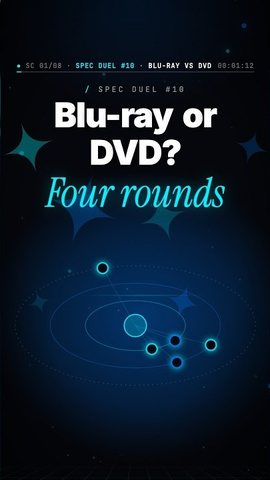
Spec Duel
Two contenders, three to five rounds of real figures, a winner each round.
Short vertical videos on PC hardware, gaming tech and everyday computing, on YouTube @SiliconVerdictHQ and TikTok @siliconverdict. Every one is picked, written, fact-checked, narrated and rendered by an automated studio.
Every one of these was picked, written, narrated, rendered and checked by the machine. Tap a cover to watch it on YouTube.
Silicon Verdict is a single-owner automation suite: no public accounts, no multi-tenant service, no third-party data processing. It exists to publish original, accurate, narrated explainers about PC hardware, gaming tech and everyday computing curiosities, at a pace a human editor cannot match.
Accuracy first. Every script goes through a fact-check gate; game claims must be backed by verbatim quotes from a source dossier.
Always on-brand. Fourteen blue looks, one channel: the palette changes from video to video but never leaves the blue family.
Safe by construction. A video that fails QA stays local and is never uploaded.
Scroll through the life of a video, from the first idea to the published Short.
The daily batch picks the formats from the channel analytics and the history database, and a game rests for 14 days after it appears.
Gemini returns structured JSON through a client with model fallbacks, quota cooldowns and validators.
A second pass hunts false claims and rewrites flagged scenes. A script that cannot be fixed is discarded.
One continuous take with word timestamps, and a local clone of the voices as backup.
Remotion draws the 1080×1920 video with its look, captions, sound and pointer.
ffmpeg checks length, size, codec and audio level. A video that fails stays on the machine.
Passing videos go to YouTube and TikTok on a schedule, with joined hashtags and credits.
Each format has its own scene types and rules, and the channel’s numbers decide which ones run tomorrow. These six are the ones viewers watch most.

Two contenders, three to five rounds of real figures, a winner each round.
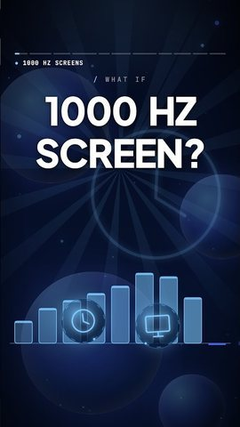
One impossible upgrade to your tech, followed to its consequences.
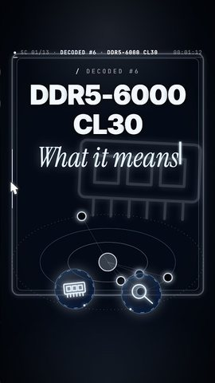
What a product name or spec label really means, piece by piece.
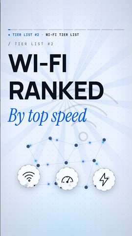
An S-to-F board that fills item by item; the best one is revealed last.
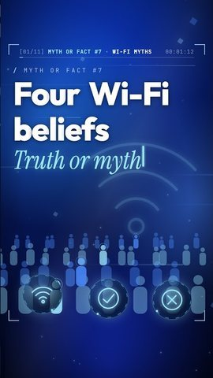
A claim people repeat, a stamp — MYTH, FACT or PARTLY — and the truth.
Decades of one technology in sixty seconds, with real figures.
The same opening frame in each of the fourteen looks. Every video gets its own palette, background, type, camera moves and captions, and never one of the last three used.
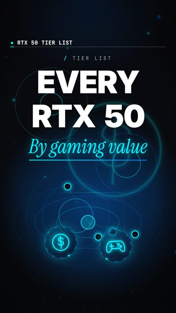
Obsidian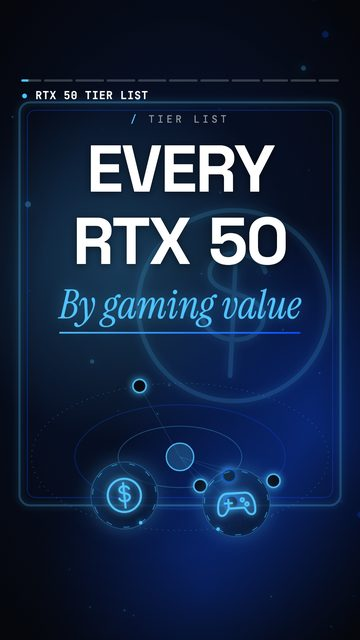
Ocean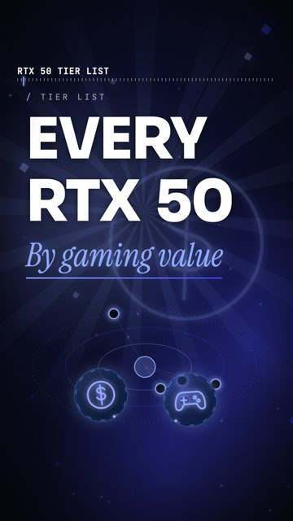
Indigo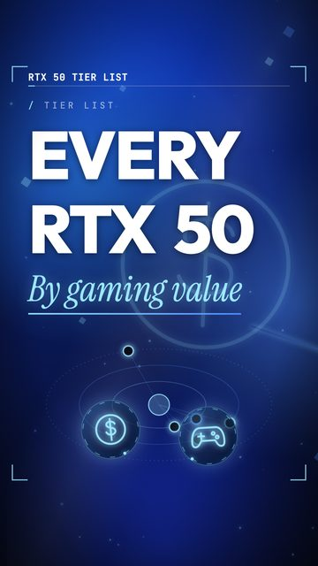
Cobalt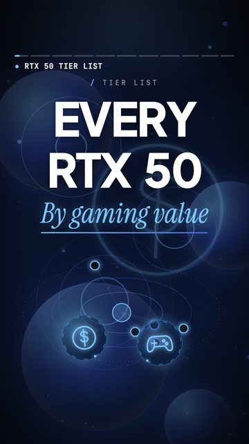
Glass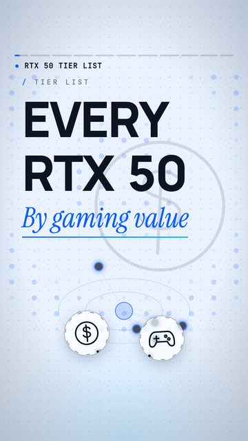
Paper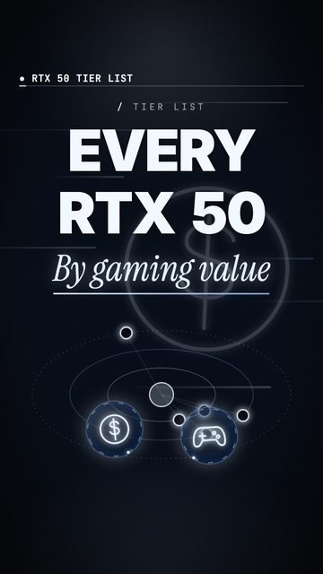
Ice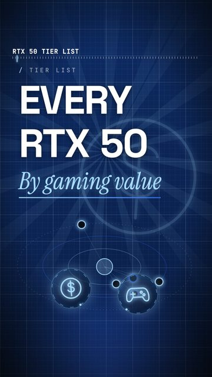
Blueprint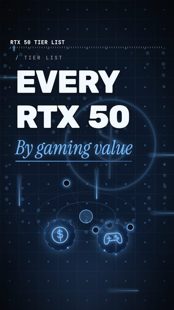
Steel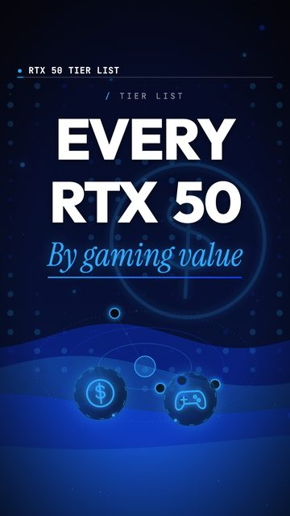
Electric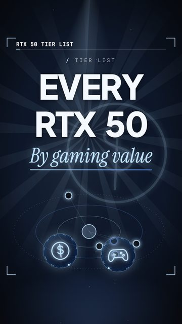
Frost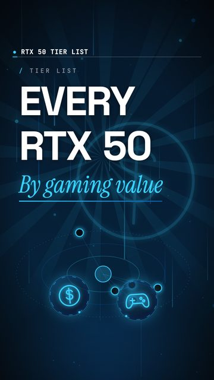
DeepseaEvery video passes a fact check and a technical check. Fail either and it never leaves the machine.
No. It is a single-owner automation suite that produces videos for the official @siliconverdict channels. There are no public accounts, no registration and nothing is offered to third parties.
Not from visitors: this portal sets no cookies and uses no trackers. From YouTube it reads only the channel's own statistics, as totals, and the public comments on its own videos so the owner can answer them. Nothing is sold; the Privacy Policy has the details.
Scripts are written by an LLM as structured JSON, then pass a second fact-check pass. Game videos must back every claim with a verbatim quote from a source dossier, which code verifies.
It is a natural-sounding synthetic voice made with ElevenLabs, recorded as one continuous take with a timestamp for every word. A robotic-sounding voice is never published.
It stays on the local machine and is not uploaded. Duration, resolution, codec and audio level are verified with ffmpeg.
Official Steam screenshots and clips cut from official trailers, credited in each video description. Every item is used in one video only, and a game rests for 14 days after appearing.
Revoke the app in TikTok under Settings and privacy, Security, Manage app permissions, or in your Google permissions page. To ask what we hold about you, or to have it deleted, write to imnotchego@gmail.com: we answer within 30 days.
Silicon Verdict follows the TikTok Developer Terms of Service, the TikTok Partner Policies and the Google API Services User Data Policy.
No cookies, analytics or trackers, and nothing loaded from other companies: no personal data, IP addresses or browsing behaviour of visitors is collected, tracked, sold or profiled.
The web portal uses no tracking pixels, advertising trackers or fingerprinting.
API keys and OAuth tokens stay in local, git-ignored files held by the channel administrator.
The YouTube APIs work only on the channel's own account: uploads, its own statistics, and replies to comments on its own videos that the owner approves one by one. No profiles or audience data are scraped, stored or sold.
The series and the cursor, real game footage, the LLM layer with automatic fallbacks, the stack, a map of the code, the everyday commands and every update since day one.